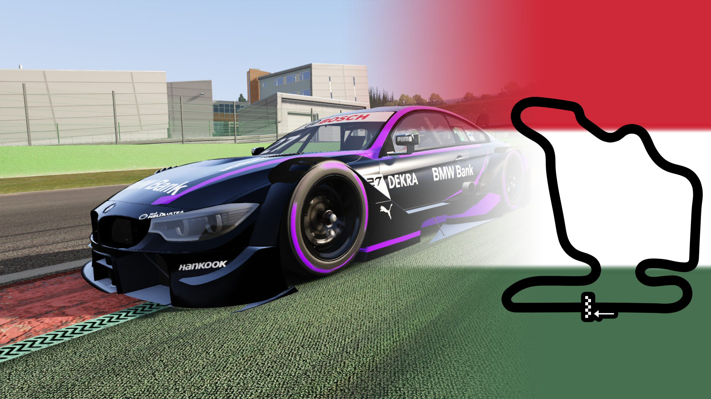

A Tomee-Esports online versenyzési terében először elmaradt egy futam, méghozzá a Február 25.-én esedékes Magyar nagydíj. 5 perce érkezett a hír, miszerint a szerver kiszolgálója és a liga vezetése között kommunikációs problémák merültek fel, melyből kialakult a futam elmaradása. Triznya Tamás Gergő, a Tomee-Esports vezetője így nyilatkozott: "Hát ő én úgymond sokkolva vagy így valami vagyok, mert, hogy, így mi úgymond nem erre számítottunk vagy valami, de úgymond nem tudom, hogy úgy mi volt a probléma vagy valami, de úgymond megpróbáltunk tenni valamit vagy valami, de úgymond nem sikerült és úgymond halasztani kell, vagy valami.". A szervereket biztosító német cég szerint a probléma egy beállításbeli konfliktusból adódott, hiszen a de.assettohosting a versenyekben a körszámot preferálja, míg a Tomee-Esports vezetősége időben méri a futamokat.  Nem megerősített információink szerint Triznya "Tomeeboy" Tamás Gergő nem tervez fizetni ezért a borzalmas szolgáltatásért, mely a liga végét is jelentheti. Egyelőre úgy tűnik Váradi "HWL_MárkJátékosHivatalos | Magyar Szimulátorversenyzés" Márk Imrének volt igaza, Horváth Márk szervertechnikus távozása után az első futam technikai problémába ütközött. Tisztán látszik, hogy a liga helyzete válságos. Bízzunk a legjobbakban, hogy a liga folytatódhasson, szurkoljunk együtt a ligavezetőségnek, akiknek ezúttal már támogatást is lehet küldeni az ilyenek elkerülése végett - A PayPal szolgáltatásán keresztül.
Március 11.-én a liga pilótái a hírhedt brit aszfaltcsíkon fognak versenyezni...
A 18 körös észvesztő csata után Zsidi Bálint győzelmet arat a Hungaroringen...
Előre nem látott teechnikai okok miatt a futamot halasztani kényszerült a vezetőség...